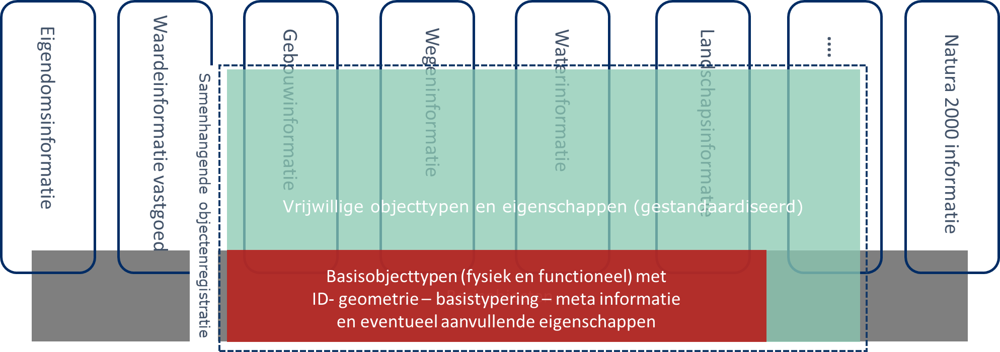
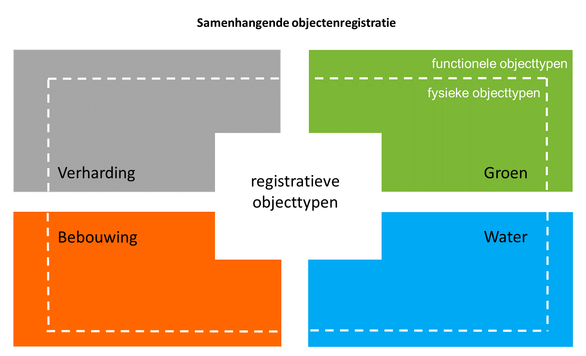
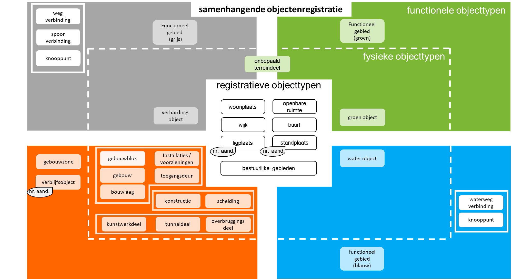

1. Inleiding
1.1 Aanleiding
In Nederland wordt heel veel informatie bijgehouden over objecten die we buiten in het terrein aantreffen. Bij die objecten kan worden gedacht aan wegen, water, gebouwen, spoorlijnen en bomen. Een deel van de over deze objecten vastgelegde informatie is alleen van belang voor heel specifieke toepassingen. Denk hierbij bijvoorbeeld aan het aantal keren dat een grasveld per jaar wordt gemaaid (maai-regiem). Deze informatie is in het algemeen niet voor iedereen van belang. Er is echter ook informatie die breed wordt gebruikt. Denk dan bijvoorbeeld aan het bouwjaar van een gebouw.
Op dit moment zijn veel van deze breder gebruikte gegevens over objecten verspreid over verschillende registraties. Het gaat daarbij zowel om registraties die de status van basisregistratie hebben gekregen, als om registraties waarin gegevens over deze objecten ten behoeve van een specifieke toepassing of ten behoeve van gebruik binnen een bepaalde sector zijn vastgelegd. De belangrijkste basisregistraties waarin informatie over fysieke objecten is opgenomen zijn de Basisregistratie Adressen en Gebouwen (BAG), de Basisregistratie Grootschalige Topografie (BGT), de Basisregistratie Waardering Onroerende Zaken (WOZ) en de Basisregistratie Topografie (BRT). Voorbeelden van andere registraties waarin gegevens over fysieke objecten zijn opgenomen zijn de registraties voor het Beheer van de Openbare Ruimte (BOR-registraties), Nationaal Wegenbestand (NWB) en het Actueel Hoogtebestand Nederland (AHN).
Elk van deze registraties kent op dit moment een eigen informatiemodel. Tussen verschillende van deze informatiemodellen heeft in de loop van de jaren afstemming plaatsgevonden. Toch is er nog steeds sprake van een gebrekkige aansluiting tussen deze verschillende informatiemodellen. Met de samenhangende objectenregistratie (SOR) wordt beoogd om meer samenhang aan te brengen tussen de verschillende objecttypen en de eigenschappen die daarover worden bijgehouden. Hiermee kunnen bijhoudingsprocessen worden vereenvoudigd, de informatievoorziening flexibeler worden opgezet en de wensen van gebruikers om meer samenhangende informatie worden ingewilligd.
1.2 Waarop is het conceptueel denkraam gebaseerd?
Vanaf 2017 wordt er gewerkt aan de verdere beeldvorming over de inhoud en werking van een dergelijke samenhangende objectenregistratie. Daarbij zijn vanuit een kerngroep objectenregistratie eerste denkbeelden ontwikkeld over onder meer de context waarin een dergelijke registratie functioneert en de doelstellingen die met een dergelijke registratie zouden moeten worden bereikt.
Deze doelstellingen zijn:
- Een betrouwbare, consistente en actuele samenhangende gegevensset voor heel Nederland;
- Een efficiëntere inwinning en bijhouding van objecten, ook in drie dimensies (3D);
- Een betere inpassing in moderne architecturen;
- Meer en eenvoudiger gebruik van deze informatie in maatschappelijke toepassingen, waarbij de registratie zich voor de gebruiker gedraagt als één registratie;
- Een onderdeel van een robuuste geo-informatie infrastructuur binnen de generieke digitale infrastructuur en voldoend aan de 12 eisen voor een basisregistratie.
Ook is nagedacht over de wijze waarop de ontwikkeling van een dergelijke registratie zou moeten plaatsvinden uitgaande van de bestaande situatie en de behoefte een dergelijk traject beheersbaar te houden. Verder zijn er een aantal globale uitgangspunten geformuleerd voor het gegevensmodel van een samenhangende objectenregistratie, het voorziene inwinnings- en productieproces en de (architectuur van de) ontsluiting van gegevens. Tenslotte zijn ook eerste beelden ontwikkeld over de organisatie en governance en over de financiering. De resultaten van dit traject zijn vastgelegd in een beleidsvisie (schetsontwerp) (https://www.geobasisregistraties.nl/basisregistraties/documenten/beleidsnota/2019/11/29/beleidsvisie-samenhangende-objectenregistratie) voor een samenhangende objectenregistratie. Deze is eind november 2019 door het BAG BAO en de Regieraad BGT vastgesteld.
Naast het uitwerken van algemene denkbeelden over de contouren van een dergelijke registratie, zijn er ook verkenningen uitgevoerd naar de mogelijke inhoud van onderdelen van de registratie. Hiervoor zijn interbestuurlijke werkgroepen voor de onderwerpen bouwwerken, wegen, water en natuur & landschap aan de gang gegaan. De werkgroepen bouwwerken en wegen hebben eind 2018 al eerste resultaten opgeleverd. De resultaten van de andere werkgroepen en de verdieping van de werkgroep wegen waren in november 2019 beschikbaar. De verdieping van de werkgroep bouwwerken verscheen eind februari 2020 verschenen. Alle inhoudelijke verkenningen vormen een belangrijke basis voor de verdere uitwerking van de inhoud van een samenhangende objectenregistratie. In bijlage 3 is voor de verschillende werkgroepen aangegeven op welke wijze is omgegaan met de door hen beschreven aanbevelingen.
Daarnaast zijn in de afgelopen jaren op verschillende momenten wensen van gebruikers van de verschillende registraties opgehaald en hebben bronhouders van verschillende registraties aangegeven welke verbeteringen naar hun mening mogelijk zijn binnen deze bestaande registraties. Een aantal van deze verbeteringen is of wordt meegenomen in de ontwikkeling die de afzonderlijke registraties doormaken. Zo zijn er in het kader van het BAG 2.0 traject enkele wijzigingen doorgevoerd in het bestaande informatiemodel (zoals de introductie van enkele nieuwe statussen voor verbouwingen). Er zijn echter ook een aantal wijzigingsvoorstellen waarvan (veelal gezien de impact) is besloten om deze op een later moment opnieuw te bezien. Bij dit soort impactvolle wijzigingen kan bijvoorbeeld worden gedacht aan de behoefte om in het kader van de BGT een striktere scheiding door te voeren tussen fysieke objecttypen en functionele objecttypen. En aan de wens om geometrie toe te voegen aan openbare ruimten in de BAG. Deze eerder geuite verbeter¬suggesties kunnen en zullen opnieuw worden beschouwd bij de verdere uitwerking van de inhoud van een objectenregistratie.
Tenslotte zijn er in het kader van de gedachtenvorming over een objectenregistratie ook nog enkele aanvullende behoeften naar voren gekomen. Het gaat hierbij onder meer om de wens om bepaalde typen gebieden een meer uniforme plaats in een basisregistratie te geven. Denk aan een aantal bestuurlijke gebieden (zoals gemeenten met hun begrenzing) en een aantal veelvuldig gebruikte andere gebiedsindelingen (zoals een meer eenduidige registratie van wijken en buurten en van de bebouwde kom). Bij de verdere uitwerking van de inhoud van een samenhangende objectenregistratie wordt met deze wensen rekening gehouden.
1.3 Hoe moet dit conceptueel denkraam worden gezien?
Op basis van deze verschillende behoeften is door een klein aantal experts een eerste versie van een denkraam voor de inhoud van een samenhangende objectenregistratie opgesteld. Deze eerste versie is vervolgens in een steeds grotere groep van experts vanuit verschillende overheidsorganisaties getoetst en verder uitgewerkt. Het resultaat dat dit traject tot op heden heeft opgeleverd is in dit document vastgelegd als een beschrijving van dit denkraam. Het is daarmee de stolling van de begin 2020 ontwikkelde denkbeelden en daarmee de basis voor de verdere uitwerking en invulling die gedurende de rest van 2020 zal plaatsvinden.
Hierbij moeten vooraf enkele opmerkingen worden gemaakt:
- Het gaat nadrukkelijk om een eerste concept voor het denkraam. Het schetst de contouren van de inhoudelijke uitwerking van de objectenregistratie. Hiermee wordt bedoeld dat de uitgangspunten en de verschillende door de interbestuurlijke werkgroepen voorgestelde richtingen zijn vertaald in een zo veel mogelijk samenhangende conceptuele beschrijving van de inhoud. De onderliggende uitgangspunten en voorstellen kennen echter nog een verschillende mate van uitwerking. Daarom is er nog geen sprake van een volledige conceptuele beschrijving van de inhoud. Daarvoor zullen begin 2020 nog verdere stappen worden gezet.
- Bij het opstellen van het conceptueel denkraam is gewerkt vanuit het eveneens in de eerder genoemde beleidsvisie opgenomen uitgangspunt dat het ontwerp van een samenhangende objectenregistratie wordt vormgegeven vanuit een nadrukkelijke scheiding tussen de vastlegging van gegevens en de functionaliteit voor het bewerken, opvragen en presenteren daarvan. Hiermee wordt aangesloten op moderne inzichten over de organisatie van de gegevenshuishouding, zoals deze onder meer worden gehanteerd in het kader van Common Ground (https://commonground.nl/.
- In dit document wordt van de hierbij behorende architectuur van een gegevenslandschap uitsluitend een verdere uitwerking gegeven aan het onderdeel gegevensbronnen (gebaseerd op eenduidige informatiemodellen). Het hieruit samenstellen van verschillende informatieproducten voor gebruikers (zoals specifieke kaartproducten) is niet opgenomen in dit document. Daaraan zal in een latere fase verder uitwerking worden gegeven.
- In dit document wordt zoveel mogelijk gebruik gemaakt van terminologie die aansluit op de wijze waarop hiermee wordt omgegaan in het hier relevante afsprakenstelsel voor informatiemodellering (Zoals het Metamodel Informatiemodellering (MIM) en de Nederlandse Technische Afspraak (NTA) 8035 over semantische Gegevensmodellering en -Integratie in de Gebouwde Omgeving). Dit betekent onder meer dat er wordt gesproken over objecttypen en de eigenschappen daarvan in plaats van over objecten en gegevens. De termen objecten en gegevens worden gebruikt om specifieke exemplaren van objecttypen en eigenschappen aan te duiden. De “Galecopperbrug” is dus een object van het objecttype “overbruggingsdeel” en “2645 GB” is dus een gegeven van de eigenschap “postcode”.
- De samenhangende objectenregistratie is slechts één van de registraties die onderdeel uitmaakt van een gegevenslandschap met daarin verschillende andere registraties, waaronder een groot aantal domeinspecifieke of sectorale geo-registraties. Hierbij is de grondgedachte dat in de samenhangende objectenregistratie objecttypen en eigenschappen daarvan worden vastgelegd die van belang zijn voor gebruik in verschillende overheidsdomeinen. De samenhangende objectenregistratie bevat daarbij aanhaakpunten (in de vorm van identificatiecodes) waaraan andere registraties kunnen koppelen. De samenhangende objectenregistratie fungeert daarmee als een verbindende schakel tussen de verschillende specifieke eigenschappen die van deze objecttypen zijn geregistreerd in de verschillende sectorale registraties. Hiermee bevordert de samenhangende objectenregistratie indirect ook de samenhang met in die sectorale registraties opgenomen specifieke objecttypen en eigenschappen daarvan.
- Met dit document wordt beoogd om de uitgangspunten over, de samenhang tussen en de betekenis van de in de objectenregistratie te onderscheiden objecttypen te beschrijven. Op een aantal punten leidt dat tot een iets andere ordening van de objecttypen binnen het conceptueel model dan op dit moment het geval is. Hiermee kan op onderdelen de suggestie ontstaan dat het bijhouden van en het gebruiken van gegevens veel complexer wordt. De verwachting is echter dat dit niet het geval zal zijn. De striktere ordening van een aantal objecttypen in het model zal leiden tot een flexibeler en daarmee uiteindelijk beter te beheren en te gebruiken registratie. Veel van de wijzigingen in het conceptueel model zullen daarbij naar verwachting uiteindelijk voor degenen die de registratie bijhouden slechts beperkt zichtbaar zijn, omdat deze door een herschikking van functionaliteit in de gebruikte software kunnen worden opgevangen. Gebruikers kunnen worden voorzien van zowel informatieproducten die aansluiten op de huidige producten als nieuwe informatieproducten waarmee optimaal wordt geprofiteerd van de wijzigingen in het conceptueel model(zie onderstaande figuur).

- In dit document zijn verschillende aanzetten tot definities voor objecttypen, mogelijke waarden voor typeringen en beschrijvingen van de aansluiting van objecttypen op bestaande basisregistraties opgenomen. Het gaat hier in alle gevallen om voorlopige beschrijvingen, die bedoeld zijn om een eerste indruk te geven van de achterliggende gedachte bij bepaalde uitgangspunten of keuzes. De exacte uitwerking van deze begrippen zal plaatsvinden in het vervolgtraject. Hierbij zal er nadrukkelijk gebruik worden gemaakt van definities en begrippen zoals die momenteel worden ontwikkeld in parallelle trajecten zoals de vernieuwing van NEN3610 (door Geonovum) en het ontwikkelen van een conceptueel model voor netwerken (door het ministerie van I&W). Dit zal leiden tot aanpassingen, aanscherpingen en nadere uitwerkingen van verschillende in dit document opgenomen begrippen en overzichten. De nu opgenomen definities, waardenlijsten en aansluitingstabellen moeten dan ook niet worden gelezen als definitief of vastgesteld.
1.4 Leeswijzer
In hoofdstuk 2 wordt een opsomming gegeven van de verschillende uitgangspunten die worden gehanteerd bij de verdere uitwerking van het conceptueel informatiemodel. Deze uitgangspunten hebben zowel betrekking op de grondgedachten van de samenhangende objectenregistratie als op de in het informatiemodel op te nemen objecttypen en eigenschappen.
De verschillende objecttypen worden in hoofdstuk 3 op hoofdlijnen uitgewerkt. Daarbij worden de objecttypen opnieuw geordend en voorzien van een eerste aanzet van een definitie. Veelal zal het hierbij gaan om dezelfde of aangescherpte definities van objecttypen, zoals deze ook in de huidige basisregistraties al worden gehanteerd.
In hoofdstuk 4 is een eerste aanzet opgenomen van een aantal hoofdtyperingen die behoren bij enkele objecttypen.
Om hetgeen in deze beschrijving is opgenomen beter te kunnen relateren aan hetgeen in de bestaande basisregistraties is opgenomen, bevat hoofdstuk 5 een globale mapping van de objecttypen uit de bestaande basisregistraties op de samenhangende objectenregistratie.
In hoofdstuk 6 is de globale inrichting van het vervolgtraject beschreven.
2. Uitgangspunten
In de beleidsvisie (schetsontwerp) zijn een groot aantal uitgangspunten opgenomen voor de verdere uitwerking van een samenhangende objectenregistratie. Alle uitgangspunten uit de beleidsvisie blijven onverminderd van toepassing. Een deel van deze uitgangspunten kan daarbij min of meer direct worden toegepast bij de verdere uitwerking van de inhoud van de samenhangende objectenregistratie. Een ander gedeelte van de uitgangspunten vraagt nog om een iets verdere concretisering. In dit hoofdstuk is een samenhangende beschrijving opgenomen van zowel de direct bruikbare uitgangspunten als de verder geconcretiseerde uitgangspunten. Het is daarbij de bedoeling dat deze verzameling uitgangspunten fungeert als basis voor zowel het verder uitwerken van het conceptueel inhoudelijk denkraam voor de inhoud van de samenhangende objectenregistratie als in de volgende fase voor het kunnen gaan uitwerken van een informatiemodel. De uitgangspunten hebben in principe geen betrekking op andere registraties dan de objectenregistratie. Het gesprek daarover vindt plaats aan andere tafels. Alle uitgangspunten hebben betrekking op de uiteindelijke situatie. Voorafgaand aan de uitgangspunten wordt hierna eerst de scope van de samenhangende objectenregistratie in enkele principes verwoord.
2.1 Scope van de samenhangende objectenregistratie
1. In de SOR worden uitsluitend objecttypen en eigenschappen van objecttypen opgenomen die van belang zijn voor gebruik in verschillende overheidsdomeinen.
Met dit uitgangspunt wordt invulling gegeven aan de ook nu al bestaande eisen die worden gesteld aan basisregistraties. De objectenregistratie fungeert daarbij als een onderdeel van het fundament voor een gegevenslandschap waarin aanvullend op dit fundament in sectorale en lokale registraties aanvullende objecttypen en eigenschappen worden geregistreerd. De samenhangende objectenregistratie fungeert daarmee dus als een verbindende schakel tussen de verschillende specifieke eigenschappen die van deze objecttypen zijn geregistreerd in de verschillende sectorale registraties. Daarnaast bevordert de samenhangende objectenregistratie indirect ook de samenhang met in die sectorale registraties opgenomen specifieke objecttypen en eigenschappen daarvan. Deze brugfunctie van de samenhangende objectenregistratie is daarmee essentieel voor het integraal kunnen gebruiken van gegevens.
Dit uitgangspunt betekent praktisch onder meer dat specifieke zoneringen en werkingsgebieden (zoals deze bijvoorbeeld voortvloeien vanuit de Omgevingswet) niet worden opgenomen in de SOR, maar “achterblijven” in sectorale registraties.
2. In de SOR worden uitsluitend objecttypen opgenomen die primair bovengronds zijn gelegen en ondergrondse objecttypen die geschikt zijn voor het vervoer van personen als onderdeel van infrastructurele voorzieningen en voor het verbinden van twee bovengrondse waterobjecten.
De scope van de samenhangende objectenregistratie is in eerste instantie beperkt tot de bovengrond en de ondergrondse delen van objecttypen die ook in het terrein zichtbaar zijn. Denk aan aaneengesloten parkeergarages in de BAG. Daarnaast worden enkele objecttypen uit de BGT die daarin op een ander niveau zijn gepositioneerd ook in de scope van de samenhangende objectenregistratie betrokken. Het gaat daarbij met name om tunneldelen en duikers. Het tweede gedeelte van de formulering richt zich daarop.
Deze afbakening van de scope is een afgeleide van de wens om tot een helder en beheersbaar transitietraject te komen. Het ook opnemen van ondergrondse objecten in de SOR, zoals leidingnetwerken of de verschillende objecttypen die thans worden opgenomen in de Basisregistratie Ondergrond (BRO), zou op dit moment leiden tot een aanzienlijk hogere complexiteit. Dit neemt niet weg dat opname van ondergrondse objecten in de toekomst niet wordt uitgesloten. Het model van de registratie is zodanig opgezet dat op termijn ook ondergrondse objecten in de registratie kunnen worden opgenomen. Deze opname zou in de loop van de tijd ook gefaseerd kunnen plaatsvinden.
3. In de SOR worden uitsluitend objecten opgenomen die gelegen zijn op het Europese grondgebied van het Koninkrijk der Nederlanden inclusief de daarbij behorende territoriale wateren.
Dit uitgangspunt is met name van belang voor het bepalen wat onder grondgebiedsdekkend moet worden verstaan bij de verdere uitwerking van de registratie. Op dit moment wordt daarbij de lijn gevolgd, zoals deze ook wordt gevolgd in het kader van de BAG en de BGT. Deze beperken zich tot het Europese grondgebied van het Koninkrijk der Nederlanden inclusief de daarbij behorende territoriale wateren. Een uitzondering hierop betreft de exclaves van het Koninkrijk België op het Nederlandse grondgebied (Baarle Hertog). Ook objecten in deze exclaves worden in de samenhangende objectenregistratie opgenomen.
Een nog nader te onderzoeken vraagpunt is in hoeverre het wenselijk dan wel noodzakelijk is om de territoriale wateren daarbij uit te breiden tot het continentaal plat. Een andere nog nader te onderzoeken vraagpunt is hoe omgegaan moet worden met de het grondgebied van de bijzondere Nederlandse gemeenten (BES-eilanden) en met het grondgebied van de andere Antillen die tot het Koninkrijk der Nederlanden behoren.
4. Bestaande objecttypen en de daarbij behorende eigenschappen vanuit de BAG en de BGT, enkele bestaande eigenschappen van objecttypen die raken aan bebouwing vanuit de WOZ en objecttypen en de daarbij behorende eigenschappen vanuit de BRT die (in de toekomst) nodig blijven voor het maken van een vernieuwd BRT kaartproduct, worden (eventueel in andere vorm) overgenomen in de SOR, tenzij er expliciete redenen aanwezig zijn om dat niet te doen.
De bestaande objecttypen uit de BAG en BGT keren in principe terug in de objectenregistratie, tenzij er voor bepaalde objecttypen expliciet andere keuzen worden gemaakt. Dat laatste lijkt bijvoorbeeld het geval te zijn voor enkele objecttypen in de BGT, die als gevolg van een striktere scheiding tussen fysieke en functionele objecten een ander karakter zullen krijgen dan wel in de huidige vorm zullen verdwijnen. Ten aanzien van de objecttypen uit de BRT zal nog nader bepaald moeten worden welke objecttypen dat betreft. Een aantal van de in de BRT gehanteerde objecttypen komen namelijk in hoge mate overeen met of sluiten in hoge mate aan op objecttypen zoals deze ook zijn opgenomen in de BAG en de BGT. In de BRT zijn echter ook objecttypen opgenomen die mogelijk een onderdeel zouden moeten gaan uitmaken van de SOR.
Ook de verschillende aan deze objecttypen verbonden eigenschappen worden in principe opgenomen in de SOR. Dat geldt ook voor een aantal eigenschappen van objecttypen die behoren tot het informatiemodel van de WOZ. Deze eigenschappen kunnen door wijzigingen in het gebouwgedeelte van het informatiemodel van de SOR naar verwachting aan objecttypen in de SOR worden gerelateerd. Voor alle eigenschappen geldt dat hetgeen in de bestaande registraties als eigenschap is opgenomen, in de SOR als een objecttype (met een andere benaming) kan worden opgenomen. Eigenschappen worden dan inhoudelijk dus wel overgenomen, maar keren in de SOR terug in een andere vorm (zoals een objecttype) en is dus als zodanig geen eigenschap meer.
2.2 Algemene uitgangspunten samenhangende objectenregistratie
1. In de SOR zijn uitsluitend gestandaardiseerde objecttypen en eigenschappen opgenomen.
De inhoud van de objectenregistratie is volledig beschreven in de vorm van een standaard. In de registratie komen dus geen objecttypen voor die niet voldoen aan deze standaard. Ook worden in de objectenregistratie uitsluitend gestandaardiseerde eigenschappen van deze objecttypen opgenomen.
Onderdeel van deze standaardisatie is dat van de verschillende objecttypen en eigenschappen ook de beoogde kwaliteit is beschreven. Van de objecttypen is dus opgenomen welke eisen er worden gesteld aan de volledigheid en actualiteit van de in de registratie opgenomen objecten. Van de eigenschappen van de objecttypen is vastgelegd wat de beoogde actualiteit en nauwkeurigheid van de in de registratie opgenomen gegevens is.
2. Definities van zowel objecttypen als eigenschappen van objecttypen zijn scherp afgebakend, niet multi-interpretabel en sluiten waar mogelijk aan op bestaande definities.
Het is van groot belang dat de basis van een informatiemodel voor een samenhangende objectenregistratie wordt gevormd door een aantal onderling goed afgestemde en heldere definities. In de bestaande basisregistraties is daarvan momenteel niet altijd sprake. Hierdoor wordt de onderlinge koppelbaarheid van gegevens beperkt en laat de uniformiteit van de opgenomen gegevens (door interpretatieverschillen of in de definities opgenomen vrijheidsgraden) nogal eens te wensen over. Bij de verdere uitwerking van de inhoud van een samenhangende objectenregistratie worden bestaande definities daarom zodanig uitgebreid en geharmoniseerd dat:
- een scherp afgebakende en duidelijke definitie van objecttypen en eigenschappen ontstaat;
- definities elkaar semantisch niet overlappen;
- er niet langer gebruik wordt gemaakt van verzamelclassificaties;
- een optimale aansluiting op overkoepelende modellen en sectorale modellen wordt gerealiseerd, zoals NEN 3610 (Basismodel Geo-informatie) en NEN 2660 (Ordeningsregels voor gegevens in de bouw - Termen, definities en algemene regels)
3. Objecttypen en eigenschappen van objecttypen moeten in de SOR worden opgenomen als deze in het kader van de SOR als wettelijk verplicht zijn aangemerkt en mogen in de registratie worden opgenomen als deze als vrijwillig zijn aangemerkt in het kader van de SOR.
De grondgedachte van de samenhangende objectenregistratie is dat deze bestaat uit:
- verplichte en gestandaardiseerde objecttypen en eigenschappen (het formele basisregistratie gedeelte)
- vrijwillige maar wel gestandaardiseerde objecttypen en eigenschappen
Hierbij is het belangrijk dat opname van vrijwillige objecten en gegevens door een bronhouder ook betekent dat deze gegevens blijvend worden bijgehouden. Voor alle opgenomen objecten en gegevens (zowel in het verplichte als het vrijwillige gedeelte) gelden dus blijvend de bijhoudingsregels die behoren bij het betreffende objecttype en eigenschappen. Bij de verdere uitwerking van de organisatie van de samenhangende objectenregistratie zullen afspraken moeten worden gemaakt over de omgang met in de registratie opgenomen objecten en gegevens die blijvend niet aan de bijhoudingsregels voldoen.
Voor het basisregistratie gedeelte gelden de 12 eisen die aan basisregistraties worden gesteld (https://www.digitaleoverheid.nl/overzicht-van-alle-onderwerpen/gegevens/naar-een-gegevenslandschap/themas/twaalf-eisen-stelsel-van-basisregistraties/) en waarvan voor de verdere uitwerking van de inhoud van de samenhangende objectenregistratie met name de eisen 6 (er is duidelijkheid over inhoud en bereik van de registratie) en 11 (de positie van de basisregistratie binnen het stelsel van basisregistraties is duidelijk en de relaties met de basisregistraties zijn beschreven) van belang zijn.
Het onderscheid tussen het verplichte gedeelte en het vrijwillige gedeelte kan (zoals ook opgenomen in de beleidsvisie) als volgt worden gevisualiseerd:

Dit betekent dus dat gebruikers van het verplichte gedeelte van de samenhangende objectenregistratie zekerheid hebben over de volledigheid van de daarin opgenomen objecten en gegevens. Omdat bronhouders de keuze hebben om objecten of gegevens al dan niet op te nemen in het vrijwillige gedeelte van de objectenregistratie, hebben gebruikers van de samenhangende objectenregistratie die zekerheid niet bij de vrijwillig op te nemen objecten en gegevens. In de communicatie rondom de informatieproducten van de samenhangende objectenregistratie zal dit principe en de mate waarin verschillende bronhouders al dan geen gebruik maken van het vrijwillige gedeelte duidelijk gecommuniceerd moeten worden.
4. Objecttypen en eigenschappen van objecttypen worden zodanig in de SOR opgenomen dat uitbreiding en inkrimping van het aantal objecttypen en eigenschappen en het aanpassen van de kwalificatie van objecttypen en eigenschappen als verplicht of vrijwillig binnen het informatiemodel eenvoudig mogelijk is.
Het moet mogelijk zijn om de inhoud van de samenhangende objectenregistratie relatief eenvoudig aan te kunnen passen. Dit begint met een informatiemodel dat dergelijke aanpassingen kan faciliteren. Dat betekent dat bijvoorbeeld het onderscheid tussen verplichte en vrijwillige objecten in de registratie niet diepgaand in het uitgewerkte informatiemodel moet worden verankerd. Of aanpassing ook daadwerkelijk zal plaatsvinden is uiteraard afhankelijk van de afspraken die er worden gemaakt over de wijze waarop besluitvorming over wijzigingen plaatsvindt en hoe er wordt omgegaan met de gevolgen daarvan voor bronhouders en gebruikers. Bij het doorvoeren van dit soort wijzigingen moeten er altijd heldere transitieafspraken worden gemaakt.
2.3 Uitgangspunten over de objecttypen
1. In de SOR wordt een expliciet onderscheid gemaakt tussen fysieke en functionele objecttypen.
Bij de uitwerking van de SOR wordt een scheiding aangebracht tussen fysieke objecttypen en functionele objecttypen. De aanleiding is dat definities van functionele objecttypen sterk samenhangen met specifieke gebruikstoepassingen of afsprakenkaders. Fysieke objecttypen worden altijd gedefinieerd door hetgeen in het terrein zichtbaar is. Door in de SOR een strikte scheiding aan te brengen tussen fysieke objecttypen en functionele objecttypen, kunnen duidelijkere regels worden opgesteld over onder meer samenhang en overlap van verschillende objecttypen. Daar waar dat de in de huidige registraties vaak niet mogelijk is, wordt het in de SOR bijvoorbeeld mogelijk dat er meerdere functionele indelingen op één fysieke locatie voorkomen. Hiermee vergroten we de flexibiliteit en de gebruiksmogelijkheden van de SOR enorm. Functionele en fysieke objecttypen worden hierbij altijd als aparte objecttypen gedefinieerd, als de begrenzing ervan kan verschillen .
2. Het objectenmodel van de SOR wordt opgebouwd vanuit de kleinste semantische eenheden die het minimum detailniveau aangeven waarvan is vastgesteld dat deze van waarde zijn voor meerdere gebruikers van de registratie.
Bij de uitwerking van de inhoud van de samenhangende objectenregistratie wordt voor de verschillende objecttypen bepaald wat de kleinste semantische eenheid is die nog van belang is voor meerdere gebruikers van de registratie. Dit minimum detailniveau bepaalt daarmee wat voor het betreffende gedeelte van de samenhangende objectenregistratie de kleinste bouwsteen vormt. Op het moment dat bepaalde gebruikers binnen deze kleinste semantische eenheid voor eigen gebruik nog een nadere detaillering wil aanbrengen, dan zal de gebruiker dat als onderdeel van de eigen sectorale registratie zelf nader moeten vormgeven. Hierbij kan bijvoorbeeld worden gedacht aan het nader detailleren van een groenobject in verschillende beplantingsvakken als onderdeel van het werkproces voor het beheren van de openbare ruimte.
Een onderwerp dat in het kader van dit uitgangspunt in het vervolgtraject nog nader zal moeten worden uitgewerkt is de vraag op welke wijze binnen het conceptueel model zal worden omgegaan met objecten die het gevolg zijn van aggregatie. Hierbij kan bijvoorbeeld worden gedacht aan de momenteel in de BRT voorkomende objecttype “gebouw” dat ontstaat door aggregatie van het in de BAG en de BGT voorkomende objecttype “pand”. Hierbij is in het kader van de SOR het uitgangspunt dat gegevens worden ingewonnen met een mate van detail die behoort bij een schaalniveau 1 : 1000. Geaggregeerde objecten moeten dus op basis van deze gegevens kunnen worden gevormd.
Vragen die daarbij eveneens zullen moeten worden beantwoord is in hoeverre geaggregeerde objecten ook terug te herleiden moeten zijn tot de verschillende oorspronkelijke objecten en wat er wordt voorgeschreven voor verplicht gebruik bij geaggregeerde objecten (het algoritme of een vastlegging van de uitkomst van dit algoritme).
3. Objecten worden in de SOR opgenomen op het moment dat deze volgens de voor het betreffende objecttype gedefinieerde criteria ontstaan en blijven daarna altijd in de registratie aanwezig, waarbij voor elk objecttype is vastgelegd welke levensfasen in de vastlegging van een object worden onderscheiden.
Met dit uitgangspunt wordt beoogd dat de volledige levensloop van een object geregistreerd wordt. Deze levensloop begint op het gedefinieerde ontstaansmoment, dat per objecttype kan verschillen. Zo is voor bepaalde objecttypen een planstatus relevant, terwijl dit voor andere objecttypen minder relevant lijkt. De objecten blijven daarna altijd in de registratie aanwezig. Door middel van een vastlegging van de levensfase van een object kan worden bepaald of een object ook nog als zodanig bestaat. Objecten worden daarbij niet afgevoerd, maar historisch gemaakt. Belangrijk is dus dat gedurende de gehele levensloop sprake is van hetzelfde unieke object (met dezelfde identificatiecode).
In de samenhangende objectenregistratie betekent dit ook dat er eensluidende uitgangspunten moeten worden vastgesteld over het te hanteren historiemodel. Het gaat daarbij onder meer om de wijze waarop wordt omgegaan met de modellering van de formele en materiele historie.
2.4 Uitgangspunten over de eigenschappen
1. Elk object in de SOR wordt voorzien van een unieke identificatiecode die gedurende de gehele levensloop van een object ongewijzigd blijft .
Elk object in de registratie wordt voorzien van een unieke identificatiecode. Deze identificatiecode maakt het mogelijk om andere gegevens te koppelen aan het betreffende object. Hiervoor is het van belang dat de identificatiecode van een object gedurende de gehele levensloop van een object hetzelfde blijft. Een object blijft op deze wijze voor de gebruiker van de gegevens over het object herkenbaar. Mocht het desalniettemin noodzakelijk zijn wijzigingen aan te brengen in identificatiecodes van objecten, dan zal minimaal moeten worden geborgd dat de oude identificatiecodes gedurende een geruime tijd behouden blijven, om gebruikers de overgang naar de nieuwe identificatiecodes zorgvuldig te laten uitvoeren.
2. Van elk object in de SOR is helder wat de typering is van het betreffende object.
Elk object in de registratie zal altijd moeten worden gekarakteriseerd als een bepaald type object. In het informatiemodel zal daarom moeten worden geborgd dat deze typering is vast te stellen. Dat kan in de verdere uitwerking op twee manieren worden vormgegeven. De eerste manier is via de objecttypenaam. Uit de definitie van het betreffende objecttype volgt dan expliciet wat voor soort object het betreft. Een voorbeeld hiervan zou een objecttype “abri” zijn. Wat voor soort object het betreft kan ook worden vastgelegd door het registreren van een typering als eigenschap van het objecttype. In hetzelfde voorbeeld zou “abri” dan een van de typeringen kunnen zijn die kan worden toegekend aan een objecttype “straatmeubilair”. Op welke wijze typeringen worden opgenomen is afhankelijk van de keuzen die worden gemaakt rondom bepaalde groepen van objecten.
3. Van elk objecttype in de SOR wordt minimaal als eigenschap vastgelegd wat het geometrisch voorkomen is van een object in de registratie conform hetgeen daarover voor het betreffende objecttype is bepaald, waarbij de vastlegging hiervan zodanig wordt vormgegeven dat de driedimensionale (3D) beschrijving van een object kan worden opgenomen.
Opname van geometrie van alle objecten in de registratie is van essentieel belang voor het goed kunnen functioneren van een geo-basisregistratie. Met geometrie wordt daarbij expliciet bedoeld een geo-gerefereerde vastlegging van de begrenzing van een object. Met geo-gerefereerde vastlegging wordt bedoeld dat de geometrie is beschreven in de vorm van coördinaten die onderdeel uitmaken van een referentie coördinatenstelsel (zoals het RD stelsel of ETRS89). De registratie wordt daarbij direct voorbereid op 3D vastlegging van objecten.
Hierbij kan de wijze van vastlegging verschillen voor de diverse objecttypen. Sommige objecttypen zullen worden vastgelegd in de vorm van 3D volumes. Andere objecttypen als vlakken met een bepaalde hoogteligging. Voor bepaalde objecten met een minimale omvang kan ook geometrische vastlegging in de vorm van een enkel coördinatendrietal (x, y en z) worden vastgelegd (puntobject).
Speciale aandacht vraagt het geometrisch voorkomen van netwerken. Aan deze geometrie zullen in de regel nadere eisen worden gesteld (zoals een eis dat het netwerk zich moet bevinden binnen de contouren van de bijbehorende fysieke objecten). Ook worden bij dit soort objecten soms ook andere benaderingen gekozen voor het bepalen van de positie op een netwerk (zoals lineair referencing). Daarnaast zal er in de verdere uitwerking ook nog aandacht moeten worden besteed aan andere wijzen van vastlegging van de locatie van objecten. Denk hierbij onder meer aan hectometerpaaltjes, verdiepingsnummers en bouwlagen.
4. In de SOR kunnen van bepaalde objecttypen aanvullende eigenschappen worden vastgelegd, als deze van belang zijn voor meerdere gebruikers vanuit verschillende gebruikersdomeinen.
De samenhangende objectenregistratie heeft primair het karakter van een basisregistratie. Dat betekent dat in de registratie van objecttypen alleen eigenschappen worden vastgelegd die in verschillende overheidsdomeinen worden gebruikt. Hierbij kunnen er tussen verschillende objecttypen grote verschillen bestaan tussen het aantal eigenschappen dat dit betreft. Bij het objecttype ‘pand’ worden bijvoorbeeld aanzienlijk meer eigenschappen vastgelegd dan bij een objecttype ‘tunneldeel’.
5. Van elk object in de SOR wordt meta-informatie opgenomen conform hetgeen daarover voor het betreffende objecttype is bepaald.
Bij meta-informatie gaat het onder meer over informatie over de kwaliteit, ontstaansmoment en versie van het object. Voor het vastleggen van meta-informatie zullen nog nadere afspraken moeten worden ontwikkeld, waarbij het uitgangspunt is dat zoveel mogelijk wordt aangesloten op hiervoor bestaande standaarden. Deze zullen worden toegespitst op de verschillende soorten objecttypen. In de huidige basisregistraties wordt aan dit aspect op verschillende wijzen invulling gegeven. In de BAG wordt gewerkt met verwijzingen naar brondocumenten, in de BGT wordt hieraan op dit moment invulling gegeven met de opname van plaatsbepalingspunten en in de WOZ wordt hiervoor specifieke kwaliteitsinformatie aan de registratie toegevoegd.
3. Beschrijving denkraam samenhangende objectenregistratie
3.1 Hoofdstructuur van de objectenregistratie
Een belangrijk uitgangspunt voor de verdere uitwerking van de inhoud van de SOR is een strikte scheiding tussen fysieke objecttypen en functionele objecttypen. Fysieke objecttypen zijn in de werkelijkheid voorkomende tastbare objecttypen, zoals gebouwen, verharding, water, spoorlijnen en bomen. Fysieke objecttypen worden altijd gedefinieerd door hetgeen in het terrein zichtbaar is. Functionele objecttypen hangen altijd samen met specifieke gebruikersbehoeften of formele afsprakenkaders. De definitie van deze objecttypen wordt dan ook altijd bepaald door hetgeen partijen hierover gezamenlijk vastleggen zonder dat dit altijd direct te relateren is aan in het terrein zichtbare onderdelen. Denk aan objecttypen als een park, een carpoolplaats of een waterbergingsgebied, waarvan de begrenzing niet direct tastbaar in het terrein is te constateren, maar volledig wordt bepaald door de exacte afspraken die daarover zijn gemaakt (zoals: hoort de berm van de carpoolplaats wel of niet tot de carpoolplaats?).
Voorbeeld: Van een weg wordt de verharding, bijvoorbeeld asfalt of gebakken klinkers, als een verhardingsobject vastgelegd met type ‘asfalt’ of ‘gebakken klinkers’. De functie van die weg wordt vastgelegd als functioneel gebied. Het functionele gebied zal iets zeggen over het gebruik van de weg, dus is het een ‘rijbaan autosnelweg’ of is het een ‘rijbaan lokale weg’. Maar het kan ook iets zeggen over bijvoorbeeld de weggebruikers die van deze weg gebruik mogen maken, zoals ‘auto’, ‘fietser’ en/of ‘voetganger’. Daarmee zijn er voor een weg dus al twee verschillende functionele indelingen die algemeen gebruikt worden.
De mate waarin er ruimte bestaat om als bronhouder de begrenzing van functionele objecttypen te bepalen wordt in de praktijk in een aantal gevallen beperkt omdat de functionele begrenzing van deze objecten voortvloeit vanuit formele besluiten hierover door een bestuursorgaan. De in deze besluiten opgenomen begrenzingen zullen dan één op één moeten worden overgenomen in de registratie. Bij de andere functionele objecttypen zal de begrenzing van objecten primair worden bepaald door het toepassen van afsprakenkaders en afbakeningsregels door de bronhouder van het betreffende objecttype in de basisregistratie. Om die reden wordt er in de verdere uitwerking van de objectenregistratie een nader onderscheid gemaakt tussen functionele objecten waarvan de afbakening en benoeming plaatsvindt op basis van formele regelgeving of besluiten en de overige functionele objecten. De eerste categorie zullen we hierna verder aanduiden als registratieve objecttypen.
In het denkraam voor de samenhangende objectenregistratie zijn de objecttypen dus gecategoriseerd naar:
- Fysieke objecttypen
- Functionele objecttypen
- Registratieve objecttypen
Deze ordening in drie categorieën kan als volgt worden gevisualiseerd:

Het onderscheid in de verschillende kleuren, grijs (verharding), groen, blauw (water) en oranje (bebouwing) is puur bedoeld voor de beeldvorming en is verder van geen betekenis voor het informatiemodel
Hieronder zijn eerste definities opgenomen van de verschillende in het kader van de samenhangende objectenregistratie onderscheiden fysieke objecttypen, functionele objecttypen en registratieve objecttypen. Het uitgangspunt voor deze definities vormen de in de bestaande basisregistraties gehanteerde definities. Vanwege een strikte scheiding tussen fysieke objecttypen en functionele objecttypen zijn deze definities soms op onderdelen aangepast. Waar mogelijk is de aansluiting gezocht op de aangescherpte definities die momenteel in het kader van de vernieuwing van NEN 3610 (basismodel geo-informatie) worden ontwikkeld. Bij enkele objecttypen is gebruik gemaakt van eerste voorlopige definities die door de werkgroepen zijn opgesteld.
3.2 Fysieke objecttypen
Fysieke objecttypen zijn in de werkelijkheid voorkomende zichtbare en tastbare objecten. Daaronder verstaan we dus objecttypen zoals gebouwen, verharding, water, spoorlijnen en bomen. In het verplichte en gestandaardiseerde deel van de SOR is op maaiveldniveau het grondgebied van Nederland voor de actuele situatie voor 100% bedekt met vlakken die onderdeel uitmaken van een fysiek object. Dat fysieke object kan uitsluitend een object van één van de hieronder benoemde opdelende objecttypen zijn. Objecten mogen elkaar op maaiveldniveau niet overlappen en dienen naadloos op elkaar aan te sluiten. Er mogen op maaiveld niveau ook geen gaten tussen fysieke objecttypen voorkomen. Wanneer objecten boven of onder elkaar liggen, bijvoorbeeld bij een viaduct, liggen ze op verschillende niveaus en kunnen fysieke objecten elkaar wel overlappen. De geometrische vastlegging van fysieke objecttypen kan afhankelijk van het objecttype plaatsvinden in de vorm van een punt, een lijn, een vlak of een volume (3D-object).
Tot de opdelende fysieke objecttypen worden de volgende objecttypen (met de daarbij behorende voorlopige definities) gerekend:
Verhardingsobject
In één of meer lagen aangelegd materiaal, welke zijn gelegd over een ondergrond of onderliggende constructie, aangelegd om een oppervlakte geschikt te maken voor het beoogde gebruik, door te egaliseren, te verstevigen en/of te verruwen.
(herkomst definitie: Voorstel NEN3610)
Groenobject
Op basis van type begroeiing, beplanting, natuurlijk voorkomen of morfologische aspecten getypeerd stuk aardoppervlak (herkomst definitie: Voorstel NEN3610)
Onbepaald terreindeel
Fysiek begrensd en zichtbaar terreindeel dat bij een gebouw hoort, dat niet nader wordt ingewonnen en dat bestaat uit een mengvorm van begroeiing, verharding, en/of water. (eerste versie van definitie voor SOR gebaseerd op definitie erf uit BGT)
Waterobject
Grondoppervlak permanent of periodiek bedekt met water. (herkomst definitie: Voorstel NEN3610)
Gebouw
Grootste, aaneengesloten, homogene, duurzaam met de aarde verbonden en omsloten bouwkundige eenheid binnen een Gebouwblok. (herkomst eerste globale aanzet van een definitie: eindrapport werkgroep bouwwerken)
Constructie
Overige bouwwerken niet zijnde een Gebouw. (eerste versie van definitie voor SOR)
Kunstwerkdeel
Onderdeel van een civieltechnisch werk voor de infrastructuur van wegen, water, spoorbanen, waterkeringen en/of leidingen. (herkomst definitie: BGT 1.1.1)
Tunneldeel
Onderdeel van een kunstmatig aangelegde, kokervormige onderdoorgang dat essentieel is voor de constructie. (herkomst definitie: BGT 1.1.1)
Overbruggingsdeel
Onderdeel van een beweegbare of vaste verbinding tussen twee punten, die door water, een weg of anderszins gescheiden zijn, dat essentieel is voor de constructie. (herkomst definitie: BGT 1.1.1)
Scheiding
Kunstmatig, meestal lineair obstakel met een werend karakter (herkomst definitie: gebaseerd op BGT 1.1.1)
Naast deze opdelende objecttypen worden binnen het gebouwmodel overigens op dit moment ook nog de volgende objecttypen onderscheiden:
Gebouwblok
Grootste aaneengesloten samenstel van gebouwen die bouwkundig-constructief met elkaar verbonden zijn. (herkomst eerste globale aanzet van een definitie: eindrapport werkgroep bouwwerken)
Bouwlaag
De verzameling Ruimten op hetzelfde niveau binnen een Gebouw. (herkomst eerste globale aanzet van een definitie: eindrapport werkgroep bouwwerken)
Installatie / voorziening
Geheel van relevante installaties of andere voorzieningen in of aan en ten dienste van het Gebouw (herkomst eerste globale aanzet van een definitie: eindrapport werkgroep bouwwerken)
Toegangsdeur
Deur of andere voorziening die vanaf de openbare weg, een erf of een gedeelde verkeersruimte toegang geeft tot een Gebouw of Verblijfsobject. (herkomst eerste globale aanzet van een definitie: eindrapport werkgroep bouwwerken)
3.3 Functionele objecttypen
Functionele objecttypen zijn objecttypen waarvan de begrenzing altijd wordt bepaald door hetgeen partijen hierover gezamenlijk vastleggen zonder dat dit altijd direct te relateren is aan in het terrein zichtbare onderdelen. Daaronder verstaan we dus objecttypen als een park, een carpoolplaats en een waterbergingsgebied. Omdat functionele objecttypen sterk afhankelijk zijn van één of meerdere gebruikersgroepen, kunnen meerdere functionele objecttypen boven, onder of naast elkaar voorkomen op dezelfde locatie. Een speelplaats kan bijvoorbeeld bij noodweer ook dienen als waterbergingsgebied. Geometrische vastlegging van functionele objecttypen kan in de vorm van een punt, een lijn, een vlak of een volume (3D-object). Denk hierbij aan verblijfsobjecten (punt), netwerken (lijn) en functionele gebieden (vlak).
Deze functionele gebieden (vlak) zijn niet landsdekkend. Dit betekent dat ongeacht het niveau, maaiveld of onder/boven maaiveld, functionele objecten het grondgebied van Nederland niet voor 100% bedekken. Objecten mogen elkaar dus overlappen en er mogen gaten voorkomen. In de SOR worden uitsluitend functionele objecttypen opgenomen die van belang zijn voor meerdere gebruikers in verschillende overheidsdomeinen.
Functionele objecttypen in de objectenregistratie zijn:
Functioneel gebied
Door functie of gebruik begrensd gebied. (herkomst definitie: Voorstel NEN3610)
Netwerk voor wegen, water en spoor
Een samenhangend stelsel van aan elkaar gesloten wegen, spoorwegen, water- en vaarwegen waardoor vlotte verplaatsing tussen twee locaties mogelijk is. Waar van toepassing middels de beoogde modaliteit. Dit is opgebouwd uit verbindingen en knooppunten. (herkomst definitie: Voorstel NEN3610)
Verblijfsobject
De kleinste binnen een of meer panden gelegen en voor woon-, bedrijfsmatige, of recreatieve doeleinden geschikte eenheid van gebruik die ontsloten wordt via een eigen afsluitbare toegang vanaf de openbare weg, een erf of een gedeelde verkeersruimte, onderwerp kan zijn van goederenrechtelijke rechtshandelingen en in functioneel opzicht zelfstandig is. (herkomst definitie: Artikel 1 Wet basisregistratie adressen en gebouwen)
Gebouwzone
Het grootst mogelijke gedeelte van een bouwwerk dat in zijn geheel is gelegen op een bouwlaag en binnen de afbakening van een gebouw en een verblijfsobject, waaraan eenduidig een bouwjaar kan worden toegekend, en dat qua constructie en gebruiksmogelijkheden voldoende uniform is. (herkomst eerste globale aanzet van een definitie: eindrapport werkgroep bouwwerken)
3.4 Registratieve objecttypen
Registratieve objecttypen zijn objecttypen waarvan de afbakening en benoeming plaatsvindt op basis van formele regelgeving of besluiten. Het gaat vaak om gebieden waarin sprake is van een eenheid van politiek/bestuurlijke verantwoordelijkheid. Denk hierbij aan de begrenzing van provincies en gemeenten. Maar het kan ook gaan om ruimtelijke objecttypen waarvan het bestaan voortvloeit vanuit hetgeen in een besluit daarover wordt bepaald. Voorbeelden hiervan zijn gemeentelijke besluiten waarin woonplaatsen worden aangewezen, en stand- en ligplaatsen (volgens de Wet BAG) worden benoemd.
Geometrische vastlegging van registratieve objecttypen vindt plaats in de vorm van een lijn of een vlak.
Registratieve objecttypen in de objectenregistratie zijn:
Woonplaats
Een door het bevoegde gemeentelijke orgaan als zodanig aangewezen en van een naam voorzien gedeelte van het grondgebied van de gemeente. (herkomst definitie: Artikel 1 Wet basisregistratie adressen en gebouwen)
Openbare ruimte
Een door het bevoegde gemeentelijke orgaan als zodanig aangewezen en van een naam voorziene buitenruimte die binnen één woonplaats is gelegen. (herkomst definitie: Artikel 1 Wet basisregistratie adressen en gebouwen)
Nummeraanduiding
Een door het bevoegde gemeentelijke orgaan als zodanig toegekende aanduiding van een verblijfsobject, een standplaats of een ligplaats. (herkomst definitie: Artikel 1 Wet basisregistratie adressen en gebouwen)
Ligplaats
Een door het bevoegde gemeentelijke orgaan als zodanig aangewezen plaats in het water al dan niet aangevuld met een op de oever aanwezig terrein of een gedeelte daarvan, die bestemd is voor het permanent afmeren van een voor woon-, bedrijfsmatige of recreatieve doeleinden geschikt drijvend object. (herkomst definitie: Artikel 1 Wet basisregistratie adressen en gebouwen)
Standplaats
Een door het bevoegde gemeentelijke orgaan als zodanig aangewezen terrein of gedeelte daarvan dat bestemd is voor het permanent plaatsen van een niet direct en niet duurzaam met de aarde verbonden en voor woon-, bedrijfsmatige, of recreatieve doeleinden geschikte ruimte. (herkomst definitie: Artikel 1 Wet basisregistratie adressen en gebouwen)
Wijk
Een door het bevoegde gemeentelijke orgaan als zodanig afgebakend gebied, aangewezen en van naam voorzien, dat geldt als eenheid van politiek/bestuurlijke verantwoordelijkheid of voor bedrijfsvoering en een cluster is van buurten (eerste versie van definitie voor SOR)
Buurt
Een door het bevoegde gemeentelijke orgaan als zodanig afgebakend gebied, aangewezen en van naam voorzien, dat als kleinste eenheid geldt van politiek/bestuurlijke verantwoordelijkheid of voor bedrijfsvoering. (eerste versie van definitie voor SOR)
Rijk
Het Europese grondgebied van het Koninkrijk der Nederlanden inclusief de daarbij behorende territoriale wateren (eerste versie van definitie voor SOR)
Provincie
Een door het parlement als provincie in een wet benoemd gedeelte van het Nederlands grondgebied (eerste versie van definitie voor SOR)
Gemeente
Een door het parlement als gemeente in een wet benoemd gedeelte van het Nederlands grondgebied (eerste versie van definitie voor SOR)
Waterschap
Een door het bevoegde provinciale orgaan als zodanig afgebakend gebied, aangewezen en van naam voorzien, dat als eenheid geldt van politiek/bestuurlijke verantwoordelijkheid voor beheer van het water en de waterstaatszorg. (eerste versie van definitie voor SOR)
Ook de bebouwde kom zal in de samenhangende objectenregistratie op worden genomen. De verdere uitwerking van dit begrip moet echter nog plaatsvinden.
3.5 Hoofdinvulling samenhangende objectenregistratie
Opname van de verschillende hiervoor gedefinieerde objecttypen in de eerder gepresenteerde ordening van objecttypen naar fysieke objecttypen, functionele objecttypen en registratieve objecttypen enerzijds en naar hoofdsoorten (verharding, groen, water en bebouwing) anderzijds, levert de volgende hoofdinvulling van de samenhangende objectenregistratie op:

Voor de volledigheid wordt er nogmaals op gewezen dat in de hoofdinvulling uitsluitend de op dit moment bekende beelden zijn verwerkt. De hoofdindeling is dus nog niet compleet. Zo ontbreken bijvoorbeeld nog inrichtingselementen zoals deze momenteel in IMGeo zijn opgenomen. De verdere aanvulling van de hoofdinvulling zal in het vervolgtraject plaatsvinden.
4. Aanzet tot nadere typering van de verschillende objecttypen
In dit hoofdstuk is een eerste aanzet opgenomen tot nadere typering van de verschillende fysieke objecttypen en functionele objecttypen in de samenhangende objectenregistratie. Deze aanzet is primair gebaseerd op de ook nu reeds in de bestaande basisregistraties gehanteerde typeringen. Vanwege een strikte scheiding tussen fysieke objecttypen en functionele objecttypen zijn op deze typeringen soms beperkte aanpassingen doorgevoerd. Ook zijn enkele eerste wijzigingen voorgesteld die het gevolg zijn van het in hoofdstuk 2 genoemde uitgangspunt over heldere definiëring. Tenslotte is daar waar mogelijk reeds bekeken in hoeverre aanpalende sectorale typeringen aanleiding kunnen geven tot een aangescherpte typering.
Deze typering is in deze fase van het traject vooral bedoeld om een eerste indruk te geven van de richting waarin de inhoud van de samenhangende objectenregistratie zich beweegt. Samen met experts vanuit de verschillende domeinen en gebruikers zal in het vervolg nog nader onderzoek noodzakelijk zijn om tot definitieve typeringen met bijbehorende definities te komen. Ook zal daarbij nog moeten worden bepaald in hoeverre het nu opgenomen onderscheid tussen de verplichte classificatie en de vrijwillige classificatie aanpassing behoeft. Hierbij is het uiteindelijk de bedoeling om te komen tot een “uitklapmodel” van typeringen, waarbij gedetailleerde typeringen (in de samenhangende objectenregistratie, maar bij voorkeur ook in sectorale registraties) altijd een nadere uitwerking vormen van één bepaalde hoofdtypering (in de samenhangende objectenregistratie).
4.1 Typering fysieke objecttypen in de objectenregistratie
Verhardingsobject
Voor het objecttype ‘verhardingsobject’ is de typering overgenomen uit IMBOR 2020. Dit leidt tot de volgende mogelijke typeringen:
| classificatie (verplicht) |
Plus classificatie (vrijwillig) |
| Fysiek voorkomen: |
|
| Asfaltverharding |
Zoab en open deklagen |
|
Oppervlakbehandelingen |
|
Dichte deklagen |
| Betonverharding |
Ongewapend verdeuveld beton |
|
Gewapend beton |
|
Oppervlakbehandelingen |
|
Ongewapend nietverdeuveld beton |
| Elementenverharding |
Natuursteen |
|
Straatbaksteen |
|
Glas |
|
Betonstraatstenen |
|
Tegels |
|
Hout |
|
Betonelement |
|
Metaal |
|
Sierbestrating |
| Halfverharding |
Samenhangend |
|
Los |
| Kunststofverharding |
Kunststof vloer |
|
Kunstgras |
| Onverhard |
Zand |
|
Zwarte grond |
|
Open grond |
Onbepaald terreindeel
Het objecttype ‘Onbepaald terreindeel’ is een nieuw objecttype. Voorgesteld wordt om de volgende typering op te nemen:
| classificatie (verplicht) |
Plus classificatie (vrijwillig) |
| Fysiek voorkomen: |
|
| Onbekend |
|
Groenobject
Voor het objecttype ‘groenobject’ is de typering overgenomen uit de huidige BGT|IMGeo 2.1.1. Verwacht wordt dat een uitbreiding van typeringen bij groenvoorziening voor hagen en boomspiegels noodzakelijk is. Hiervoor is nadere afstemming met IMBOR 2020 nodig. Dit leidt tot de volgende typeringen voor het objecttype ‘groenobject’:
| classificatie (verplicht) |
Plus classificatie (vrijwillig) |
| Fysiek voorkomen: |
|
| Boomteelt |
|
| Bouwland |
Braakliggend |
|
Tuinachtige grond |
|
Tuinbouwgrond |
|
Bollenteelt |
|
Vollegrondsteelt |
|
Akkerbouw |
| Duin |
Gesloten duinvegetatie |
|
Open duinvegetatie |
| Fruitteelt |
Laagstam boomgaarden |
|
Klein fruit |
|
Hoogstam boomgaarden |
|
Wijngaarden |
| Grasland agrarisch |
Weide |
|
Grasland overig |
|
Schraalgrasland |
|
Ruig gras |
|
Natuurlijke grasvegetatie |
| Gemengd bos |
|
| Graft |
|
| Heide |
Droge heide |
|
Natte heide |
| Houtwal |
|
| Kwelder |
|
| Loofbos |
Griend en hakhout |
| Moeras |
Moerasvegetatie |
| Naaldbos |
|
| Rietland |
Rietvegetatie |
|
Plasberm |
| Slik |
|
| Steilwand |
|
| Struiken |
|
| Zandvlakte |
Zandverstuiving |
|
Strand en strandwal |
| groenvoorziening |
bosplantsoen |
|
gras- en kruidachtigen |
|
planten |
|
struikrozen |
|
heesters |
|
bodembedekkers |
Waterobject
Voor het objecttype ‘waterobject’ is de typering uit de huidige BGT|IMGeo 2.1.1 aangescherpt conform eerder gestelde uitgangspunten. Hierdoor is er geen sprake meer van multitypering van watervlakten. Daarnaast is ervoor gekozen om de typering ‘zee’ onder ‘watervlakte’ te plaatsen, Dit heeft als consequentie dat zee op basis van het huidige model van het verplichte deel naar het vrijwillige deel opschuift. Bij de verdere uitwerking zal worden bekeken op welke wijze hiermee kan worden omgegaan.
| classificatie (verplicht) |
Plus classificatie (vrijwillig) |
| Type: |
|
| waterloop |
rivier |
|
sloot |
|
kanaal |
|
beek |
|
gracht |
|
bron |
| watervlakte |
zee |
|
meer |
|
plas |
|
ven |
|
vijver |
| greppel/droge sloot |
|
Bebouwing
De typering behorende bij de aan gebouwen gerelateerde fysieke objecttypen zal in het vervolgtraject nader worden onderzocht.
Kunstwerkdeel
De typering behorende bij kunstwerkdeel is overgenomen uit de huidige BGT|IMGeo 2.1.1 aangevuld met de objecttyperingen zoals in het voorstel voor IMGeo 2.2 zijn opgenomen. Uitgezonderd is de groeiplaatsinrichting omdat hiervoor afstemming met IMBOR2020 nodig is.
| classificatie (verplicht) |
Plus classificatie (vrijwillig) |
| Type: |
|
| hoogspanningsmast |
|
| gemaal |
|
| Perron |
|
| sluisdeur |
|
| strekdam |
|
| Steiger |
|
| Stuw |
|
| Niet BGT |
keermuur |
| Niet BGT |
overkluizing |
| Niet BGT |
duiker |
| Niet BGT |
faunavoorziening |
| Niet BGT |
vispassage |
| Niet BGT |
bodemval |
| Niet BGT |
coupure |
| Niet BGT |
ponton |
| Niet BGT |
voorde |
| Niet BGT |
hellingbaan |
| Niet BGT |
vlonder |
Tunneldeel
De typering behorende bij tunneldeel is overgenomen uit de huidige BGT|IMGeo 2.1.1. In het voorstel voor IMGeo 2.2 zijn voor het tunneldeel geen aanvullingen opgenomen.
| classificatie (verplicht) |
Plus classificatie (vrijwillig) |
| Tunneldeel |
|
Overbruggingsdeel
De typering behorende bij overbruggingsdeel is overgenomen uit de huidige BGT|IMGeo 2.1.1. In het voorstel voor IMGeo 2.2 zijn voor het overbruggingsdeel geen aanvullingen opgenomen.
| classificatie (verplicht) |
Plus classificatie (vrijwillig) |
| overbruggingsdeel |
Hoort bij type overbrugging: |
|
brug |
|
aquaduct |
|
viaduct |
|
ecoduct |
|
fly-over |
|
|
|
Type Overbruggingsdeel |
|
dek |
|
landhoofd |
|
pijler |
|
sloof |
|
pyloon |
Constructie
De typering behorende bij Constructie is overgenomen uit de huidige BGT|IMGeo 2.1.1 en aangevuld met de objecttyperingen zoals in het voorstel voor IMGeo 2.2 zijn opgenomen.
| classificatie (verplicht) |
Plus classificatie (vrijwillig) |
| Type: |
|
| bezinkbak |
|
| lage trafo |
|
| Bassin |
|
| Niet BGT |
sleufsilo |
| Niet BGT |
infiltratiereservoir |
Scheiding
De typering behorende bij scheiding is overgenomen uit de huidige BGT|IMGeo 2.1.1. In het voorstel voor IMGeo 2.2 zijn voor scheiding geen aanvullingen opgenomen.
| classificatie (verplicht) |
Plus classificatie (vrijwillig) |
| Type: |
|
| Muur |
|
| Kademuur |
|
| damwand |
|
| geluidsscherm |
|
| walbescherming |
|
| Hek |
|
| Niet BGT |
draadraster |
| Niet BGT |
faunaraster |
4.2 Typering functionele objecttypen in objectenregistratie
Netwerken
Voor de functionele typering van netwerken is aangesloten bij de beschikbare typeringen in de BGT|IMGeo voor wegen en spoor. Verdere afstemming is nodig met NWB, IMBOR/IMWV, Prorail en de watersector. Voor wegverbindingen zijn de voorstellen voor IMGeo 2.2 overgenomen. Voor spoorverbindingen is de typering vereenvoudigd. Het uitgangspunt dat objecttypen scherp zijn afgebakend, maakt dat de typering sneltram is vervallen en dat havenkraan vervangen is door (laad-/los)kraan.
| Objecttype |
classificatie (verplicht) |
Plus classificatie (vrijwillig) |
| Wegverbindingen |
Functie: |
|
|
OV-baan |
|
|
overweg |
|
|
spoorbaan |
|
|
baan voor vliegverkeer |
|
|
rijbaan autosnelweg |
Verbindingsweg |
|
|
calamiteitendoorsteek |
|
|
Verkeersdrempel |
|
rijbaan autoweg |
Verbindingsweg |
|
|
calamiteitendoorsteek |
|
|
Verkeersdrempel |
|
rijbaan regionale weg |
Verbindingsweg |
|
|
Verkeersdrempel |
|
rijbaan lokale weg |
Verkeersdrempel |
|
fietspad |
Verkeersdrempel |
|
voetpad |
|
|
voetpad op trap |
|
|
ruiterpad |
|
|
inrit |
|
|
|
|
| Spoorverbindingen |
Functie: |
|
|
trein |
|
|
tram |
|
|
Niet BGT |
(laad/los-)kraan |
|
|
|
| Waterwegverbindingen |
Functie: |
|
|
vaaweg |
|
|
hydrologie??? |
|
|
|
|
|
Knooppunten \Type: |
|
|
kruispunt fysieke wegen |
|
|
overweg |
|
|
wijziging attribuutwaarde |
|
|
tussenpunt |
|
|
|
|
Functionele gebieden
De functionele gebieden zijn voor het overzicht opgedeeld in grijze, groene en blauwe gebieden met een objecttypering. Deze indeling is functioneel ingestoken en heeft geen relatie met het fysieke voorkomen in het terrein. Hierbij is aangesloten op de typering zoals voor BGT|IMGeo wordt gebruikt, inclusief de voorstellen voor IMGeo 2.2. Als gevolg van het uitgangspunt dat fysiek en functie worden gescheiden zijn een aantal functies verschoven van voorheen een typering bij een fysiek object naar een eigenstandig functioneel object.
| Objecttype |
classificatie (verplicht) |
Plus classificatie (vrijwillig) |
| Functioneel Gebied (grijs) |
Functie: |
|
|
verkeerseiland |
Vluchtheuvel |
|
|
Verkeersdruppel |
|
berm |
|
|
parkeervlak |
Carpoolplaats |
|
Niet BGT |
Halteplaats |
|
Niet BGT |
verkeersaansluiting |
|
Niet BGT |
verkeersknooppunt |
|
Niet BGT |
Verkeerskruispunt |
|
Niet BGT |
Verkeerszone |
|
Niet BGT |
Voetgangersgebied |
|
Niet BGT |
Woonerf |
|
Niet BGT |
infrastructuur verkeer en vervoer |
|
Niet BGT |
Bushalte |
|
Niet BGT |
Benzinestation |
|
Niet BGT |
Verzorgingsplaats |
.
| Objecttype |
classificatie (verplicht) |
Plus classificatie (vrijwillig) |
| Functioneel Gebied (groen) |
Functie: |
|
|
oever/slootkant |
|
|
Niet BGT |
Landbouw |
|
Niet BGT |
recreatie: speeltuin |
|
Niet BGT |
recreatie: park |
|
Niet BGT |
recreatie: sportterrein |
|
Niet BGT |
recreatie: camping |
|
Niet BGT |
recreatie: bungalowpark |
|
Niet BGT |
recreatie: volkstuin |
.
| Objecttype |
classificatie (verplicht) |
Plus classificatie (vrijwillig) |
| Functioneel Gebied (blauw) |
Functie: |
|
|
kering |
|
|
haven |
|
|
Niet BGT |
opstelpunt open water |
|
Niet BGT |
Sluiscomplex |
|
Niet BGT |
Zuiveringscomplex |
|
Niet BGT |
Waterwingebied |
|
Niet BGT |
waterbergingsgebied |
|
Niet BGT |
infrastructuur waterstaatswerken |
.
| Objecttype |
classificatie (verplicht) |
Plus classificatie (vrijwillig) |
| Functioneel Gebied |
Type: |
|
|
Niet BGT |
Stiltegebied |
|
Niet BGT |
Zonnepanelenveld |
|
Niet BGT |
Bedrijvigheid |
|
Niet BGT |
natuur en landschap |
|
Niet BGT |
Bewoning |
|
Niet BGT |
maatschappelijke en/of publieksvoorziening |
|
Niet BGT |
Recreatie |
|
Niet BGT |
Begraafplaats |
|
Niet BGT |
functioneel beheer |
|
Niet BGT |
functioneel beheer: hondenuitlaatplaats |
Bebouwing
De typering behorende bij de aan gebouwen gerelateerde functionele objecttypen zal in het vervolgtraject nader worden onderzocht.
Functionele objecttypen uit BRT
De typering behorende bij de aan gebouwen gerelateerde functionele objecttypen zal in het vervolgtraject nader worden onderzocht.